A marca,
e como usá-la
Guia do Instituto Urupema para quem desenha, imprime, programa ou escreve em nome dele. Edição de setembro de 2026.
Guia do Instituto Urupema para quem desenha, imprime, programa ou escreve em nome dele. Edição de setembro de 2026.
01 · Por que a marca é assim
O Instituto Urupema faz pesquisa, opera infraestrutura computacional, forma pessoas e presta serviços tecnológicos. A marca existe para que tudo isso seja lido como uma só instituição de longa duração, com uma tese: tecnologia bruta entra, passa por critério e chega como valor a quem precisa.
Urupema é a peneira de fibra trançada. O nome dá o método, não a ilustração: antes de qualquer coisa circular, existe uma malha de regras, permissões, origem e prova. Daí a ideia que orienta todas as decisões visuais e de texto:
A malha vem antes do fluxo.
Posição
Infraestrutura de confiança para ciência e tecnologia: a instituição onde a tecnologia passa por critério, preserva soberania, deixa prova e chega a quem normalmente fica de fora.
O que a marca precisa fazer
Fazer uma ICT privada nova ser reconhecida por Estado, academia, empresas e pessoas em formação como uma única instituição de longa duração — não uma lista de serviços — que faz dados, computação e conhecimento circularem com critério, soberania, prova e acesso.
O que deve ficar associado
Critério antes do fluxo; soberania como colaboração sob controle, não isolamento; prova no lugar de promessa; acesso como capacidade de trabalho, não benevolência.
Com quem fala
Dirigentes, conselho e mantenedores; órgãos públicos, ICTs, universidades e agências de fomento; pesquisadores, engenheiros e times de dados; empresas e parceiros de PD&I; alunos e pessoas em transição profissional; projetos sociais e organizações menores sem infraestrutura adequada.
Estrutura, regra, fonte, responsável ou limite aparecem antes de efeito; o que não carrega a ideia sai ou fica quieto.
Por quêÉ a tese aplicada: a estrutura existe antes do fluxo.
Por composição (página, tela, peça), no máximo um elemento em Urucum além do centro do símbolo, que é parte da marca e não conta. Numerais, listas, títulos, fundos, ícones, links de texto corrido e séries secundárias de gráficos nunca são Urucum.
Por quêUm único ponto quente faz o Urucum funcionar como sinal e mantém a marca sóbria.
Toda linha conecta entidades rotuladas e tem consequência; células, trilhas e alinhamentos substituem nuvens de pontos, circuitos e redes.
Por quêRelação sem rótulo contradiz a promessa de prova.
Documentos, certificados, relatórios, telas de evidência e selos terminam em um registro legível: o que é, versão, data, responsável e identificador consultável. Registro sem dado real não é impresso.
Por quêA marca afirma que o que passa, passa com prova; as próprias peças precisam cumprir isso.
Pessoas aparecem pesquisando, construindo, estudando e trabalhando; nunca como destinatárias passivas de benevolência.
Por quêO eixo social é acesso a capacidade e trabalho, não benevolência.
02 · Símbolo e assinaturas
O símbolo é uma malha de três por três barras que alternam entre horizontais e verticais, como fibras trançadas. A barra do centro, em Urucum, é a decisão dentro de uma estrutura estável.
Como ler o desenho
Medidas em unidades do master, que tem 285 de lado.

Uma célula em volta do símbolo ou da assinatura; os arquivos de assinatura já incluem esse respiro.
Por quêUm terço do lado é uma medida que se confere a olho e com régua, em qualquer tamanho.
VariaçãoEm capas e fachadas, aumente o respiro; nunca o reduza.
Símbolo sozinho: 16 px com o favicon ajustado; 20 px com o master; 6 mm impresso. Assinaturas: símbolo com 44 px ou 8,5 mm de altura; abaixo disso, use só o símbolo. Carimbo: 25 mm de diâmetro; digital a partir de 160 px.
Por quêAbaixo disso as barras se fundem e INSTITUTO deixa de ser lido; o símbolo sozinho resiste a tamanhos bem menores.
VariaçãoEm 16 e 32 px, use os arquivos de favicon, já alinhados à grade de pixels.
Tinta e Urucum sobre claro; Palha e Urucum sobre Tinta; uma cor quando a produção só tem uma tinta.
Por quêO Urucum do centro sobre Tinta tem contraste suficiente para forma (3,6 : 1); sobre Areia, prefira a versão em Tinta.
Não redesenhar, rotacionar, espelhar, espaçar ou reordenar as barras; não colocar letras dentro do símbolo.
Por quêA alternância das nove barras é o que torna o símbolo reconhecível e distinto de uma grade qualquer.
A assinatura não carrega descritor setorial fixo.
Por quêO Instituto tem quatro frentes; um descritor setorial encolhe a marca-mãe.
VariaçãoQuando o contexto pedir, escreva o descritor como texto, fora da assinatura: Pesquisa, infraestrutura e formação em dados, IA e computação.
O símbolo pode entrar em escala de campo, recortado pelo quadro, uma vez por peça, com a barra central sempre inteira e visível.
Por quêRecortado pelo quadro, o símbolo mostra menos do que é e ganha força; o centro inteiro garante que a decisão continua lá.
VariaçãoNo campo, as oito barras podem ser Areia sobre Palha ou Tinta elevada sobre Tinta. Nesse caso, a assinatura da peça é a de uma cor.
03 · Cor
Palha ou branco dominam o campo; Tinta carrega texto, símbolo e fundos escuros; Areia separa e agrupa; Urucum aparece uma vez por composição como decisão. As cores funcionais existem para contraste e estados e nunca representam a marca em comunicação.
Palha#F6F1E7o campo
Areia#E7DFD0agrupa e separa
Tinta#221F1Atexto e símbolo
Urucum#B4602Fa decisão, uma vez
As quatro cores da marca e as cores de apoio
| Cor | Hex | Papel |
|---|---|---|
| Palha | #F6F1E7 | fundo institucional dominante |
| Areia | #E7DFD0 | superfícies secundárias, filetes, campo do símbolo em escala |
| Tinta | #221F1A | texto, símbolo e fundos escuros |
| Urucum | #B4602F | a decisão: uma vez por composição |
| Tinta reduzida | #686157 | texto secundário sobre Palha, Areia e branco |
| Urucum texto | #A85626 | texto em Urucum, só sobre Palha ou branco |
| Filete forte | #8E887F | bordas de campos, botões e controles |
| Branco papel | #FFFFFF | documentos impressos e superfícies de produto |
| Tinta elevada | #2D2A24 | superfície sobre fundo Tinta |
| Filete escuro | #3B3731 | filetes sobre fundo Tinta |
| Palha reduzida | #BCB8AE | texto secundário sobre Tinta |
| Urucum texto sobre Tinta | #EB9461 | chamada ou estado em 16 px ou mais, peso 500 ou mais |
| Filete forte escuro | #706B64 | bordas de controles sobre Tinta |
Texto em Urucum usa Urucum texto e só sobre Palha ou branco; sobre Areia, texto é Tinta ou Tinta reduzida.
Filete Areia separa quando o espaço já separa; bordas de campos, botões e controles usam Filete forte (3:1).
Cores de estado existem só em produto e operação, sempre com rótulo; nunca em comunicação institucional.
Fundo Tinta é uma decisão de peça inteira ou de seção inteira, não um cartão escuro solto.
No impresso, o miolo sai em papel branco; Palha é o campo da tela e das capas.
Urucum texto sobre Tinta só em 16 px ou mais com peso 500 ou mais: chamada, estado ou destaque, nunca corpo.
Estados de operação — só em produto e infraestrutura, sempre com rótulo
Contraste verificado
| Texto ou forma | Palha | Areia | Branco papel | Tinta | Tinta elevada |
|---|---|---|---|---|---|
| Tinta | 14,59 | 12,40 | — | — | — |
| Tinta reduzida | 5,43 | 4,62 | 6,11 | — | — |
| Urucum texto | 4,64 | — | 5,22 | — | — |
| Urucum | 4,01 * | — | — | 3,64 * | — |
| Filete forte | 3,12 * | — | — | — | — |
| Palha | — | — | — | 14,59 | — |
| Palha reduzida | — | — | — | 8,29 | 7,22 |
| Urucum texto sobre Tinta | — | — | — | 6,99 | 6,09 |
| Filete forte escuro | — | — | — | 3,11 * | — |
| Estado correto | 5,43 | — | — | — | — |
| Estado de atenção | 5,46 | — | — | — | — |
| Estado de falha | 5,46 | — | — | — | — |
| Estado correto sobre Tinta | — | — | — | 7,50 | — |
| Estado de atenção sobre Tinta | — | — | — | 7,50 | — |
| Estado de falha sobre Tinta | — | — | — | 7,46 | — |
Razão de contraste WCAG 2.x. Texto comum pede 4,5 : 1. * Só para texto grande, bordas e formas, que pedem 3 : 1.
04 · Tipografia
Duas famílias com licença aberta (SIL OFL 1.1) e suporte completo ao português. A Newsreader fala pela instituição; a Space Grotesk opera: corpo, interface, dados, rótulos e o nome na assinatura.
Newsreader · voz institucional
Ág
ABCÇDEFGHIJKLM
NOPQRSTUVWXYZ
abcçdefghijklm
nopqrstuvwxyz
áâãéêíóôõú 0123456789
Títulos, abertura de documentos, manifesto, citações, carimbo.
Space Grotesk · voz de sistema
Ág
ABCÇDEFGHIJKLM
NOPQRSTUVWXYZ
abcçdefghijklm
nopqrstuvwxyz
áâãéêíóôõú 0123456789
Corpo, interface, dados, rótulos, registro, assinatura nominal.
MonumentalNewsreader, 96–200 px ou 60–120 pt, peso 400, entrelinha 0,92, eixo óptico no máximo; uma por peça, em capas e aberturas
Bem comum.ExibiçãoNewsreader, 48–80 px, peso 400–500, entrelinha 0,98–1,04
O dado fica na origemTítuloNewsreader, 28–40 px, peso 500, entrelinha 1,1
A análise vai até o dadoCorpoSpace Grotesk, 16–19 px ou 10–11 pt, peso 400, entrelinha 1,5, linha de 60–72 caracteres
Cada participante mantém sua base no próprio ambiente. As consultas conjuntas rodam no local de origem.ApoioSpace Grotesk, 14–15 px, peso 400, Tinta reduzida
Versão do nó 2.4.1 · atualizada em 24 set 2026RótuloSpace Grotesk, 11–13 px, peso 500, caixa alta, espaçamento 0,08 em
Política · Origem · EvidênciaDadoSpace Grotesk com algarismos tabulares, peso 400–500
99,94% · 46 de 64 · IU-RT-2026-007Um salto de escala por peça: o título grande é pelo menos três vezes o corpo.
Newsreader nunca em rótulos, tabelas ou interface; Space Grotesk nunca no título de abertura de um documento institucional.
Títulos em exibição são compostos à mão: quebra de linha por sentido, sem viúvas, alinhados à borda visível.
Em arquivos que terceiros editam sem as fontes da marca, use Georgia no lugar da Newsreader e Arial no lugar da Space Grotesk, com os mesmos papéis.
05 · Gramática
Poucos elementos, sempre com a mesma função, fazem uma proposta, uma tela e um certificado parecerem da mesma casa sem repetir o mesmo leiaute.

Malha de células: a largura útil se divide em 3, 6 ou 12 colunas; o respiro mínimo das margens é uma célula (96 px em tela; 18 mm em A4). A estrutura aparece antes do conteúdo: filetes Areia marcam as células e o conteúdo ocupa células inteiras.
Por quêA malha vem antes do fluxo: a estrutura aparece antes do conteúdo que a atravessa.
VariaçãoEm capas, a própria malha do símbolo pode ser a malha da página, alinhada às margens.
Execuções / FJ-2048
Execução FJ-2048
Três secretarias · resultado agregado pronto
A barra de decisão tem a proporção da barra do símbolo (2,4 : 1, pontas redondas) e marca a única decisão da peça: chamada principal, etapa atual, valor que importa ou seção de destino. Filetes longos são Tinta ou Areia, nunca Urucum.
Por quêÉ a barra central do símbolo tirada da marca e posta no ponto que decide: a peça inteira aponta para lá.
VariaçãoNa vertical (1 : 2,4) quando o eixo da peça é vertical, como numa trilha.
Relatório técnico
Doze semanas de consultas conjuntas sem mover um registro
Peças oficiais terminam no registro: rótulos em Space Grotesk caixa alta e valores em algarismos tabulares, sobre filete. Documentos, certificados, relatórios, telas de evidência e selos terminam em um registro legível: o que é, versão, data, responsável e identificador consultável. Registro sem dado real não é impresso.
Por quêÉ a proofline na forma de desenho: a peça mostra de onde vem antes de pedir confiança.
VariaçãoEm telas, o registro vira a linha de evidência; em certificados, carrega o código de verificação.

O símbolo pode entrar em escala de campo, recortado pelo quadro, uma vez por peça, com a barra central sempre inteira e visível.
Por quêMostrar menos do que o todo dá força à capa e deixa a decisão como único ponto quente.
VariaçãoPalha com barras Areia para peças institucionais; Tinta com barras Tinta elevada para relatórios, apresentações e crachás.
Assimetria controlada: o título ocupa a coluna da esquerda ou o terço superior; nada se centraliza por hábito.
Por quêAssimetria controlada é a diferença entre um documento com ponto de vista e um formulário.
O título grande é pelo menos três vezes o corpo; o resto da peça fica em dois ou três tamanhos.
Por quêMuitos degraus pequenos obrigam o leitor a contar níveis; um salto grande ordena de uma vez.
06 · Uma decisão em Urucum
Por composição (página, tela, peça), no máximo um elemento em Urucum além do centro do símbolo, que é parte da marca e não conta. Numerais, listas, títulos, fundos, ícones, links de texto corrido e séries secundárias de gráficos nunca são Urucum.
Três frentes
01 · 02 · 03
Quando tudo é decisão, nada é. O leitor perde o ponto para onde a peça quer levá-lo. Escolha o único elemento que pede ação ou decide; o resto fica em Tinta.
Refinar tecnologia
O Urucum em área grande vira clima laranja e aproxima a marca de centros de inovação que já usam laranja como campo. Ele perde a função de sinal. Campo é Palha, branco ou Tinta.
Girado, o centro vira vertical e a alternância das barras se inverte: é outro desenho. A malha só é reconhecível na posição do master.
Repetido, o símbolo deixa de assinar e vira papel de parede; também dilui a raridade que faz dele uma marca. Use-o uma vez, no máximo em escala de campo.
Soberania aqui é colaborar sob controle: política, revogação, origem e prova. O cadeado diz só “trancado” e puxa a marca para a estética de cibersegurança. Mostre o estado com rótulo.
Uma rede sem rótulos não diz quem decide nem o que circula, e é o clichê da categoria. Desenhe a linhagem como trilha entre entidades nomeadas, com direção e data.
07 · Aplicações
Peças de referência feitas com os modelos desta pasta. O conteúdo é ilustrativo; a estrutura, as proporções e os comportamentos são os da marca.


Na tela pequena
A estrutura é a mesma, em uma coluna. O título continua sendo a única escala grande, a barra de decisão continua marcando uma só ação, e o registro desce para o fim da página.


08 · Linguagem
A voz é sóbria, precisa, material e pública. Ela explica estruturas concretas: quem decide, o que circula, onde roda, sob quais condições, que prova fica e quem ganha capacidade.
Tese — em qualquer peça institucional
Refinar tecnologia em bem comum.
Posiciona a instituição inteira. Não use como parte fixa da assinatura.
Prova — só onde há prova
O que passa, passa com prova.
Somente onde há governança, evidência, proveniência ou atestação reais na peça.
Se a afirmação pode mostrar fonte, versão, número, responsável ou condição, mostre; se não pode, reduza a afirmação.
Por quêA marca promete prova; um superlativo sem fonte é a contradição mais visível que ela pode cometer.
Diga o que circula, onde roda, quem decide e o que muda antes de falar em transformação.
Por quêOs públicos técnicos e públicos confiam no que conseguem verificar; abstração soa como a categoria inteira.
Português claro e contemporâneo; a origem do nome informa o método e nunca vira vocabulário pseudoindígena.
Por quêA origem do nome é método, não cenário; exotizá-la afasta ciência e governo.
Fale de capacidade, trabalho, autonomia e parceria; nunca de dar voz, salvar ou beneficiar.
Por quêQuem estuda e quem recebe infraestrutura é agente; linguagem de caridade tira essa agência.
Soberano, verificado, auditável e seguro só aparecem quando o mecanismo que os sustenta existe e pode ser nomeado na mesma peça.
Por quêSoberano, verificado e auditável são afirmações técnicas; sem mecanismo, viram propaganda.
Princípio
Não escreva
Escreva
Prova antes de superlativo
Somos referência em soluções de IA de ponta.
Três secretarias analisaram dados de saúde juntas por doze semanas; nenhuma linha saiu de casa.
Concreto antes de abstração
Impulsionamos a transformação digital do setor público.
Instalamos um nó em cada secretaria; a consulta vai até o dado e só o agregado autorizado volta.
Brasileiro sem folclore
Inspirados na sabedoria ancestral da peneira indígena.
Urupema é a peneira de fibra trançada: uma malha que decide o que passa. É o nosso método.
Acesso sem paternalismo
Democratizamos a tecnologia para os menos favorecidos.
Formação de dez meses com projeto real e entrevistas marcadas, com prioridade para quem está fora do mercado.
Promessa condicionada a mecanismo
Plataforma 100% segura e soberana.
Cada autorização é explícita, tem validade e pode ser revogada; toda execução deixa registro assinado.
Tom por momento
| Momento | Como soa |
|---|---|
| Institucional e editais | Formal, econômico, verificável: missão, capacidade, governança, evidência |
| Produto e operação | Operacional: verbos curtos, estados claros, rótulos de política, origem e evidência |
| Educação e trabalho | Claro, exigente e respeitoso: meta de aprendizagem e conexão com trabalho, sem promessa motivacional |
| PD&I e comercial | Problema, hipótese, escopo, risco, capacidade, entrega, prova |
| Incidente | Cronologia, fatos conhecidos, fatos ainda desconhecidos, ação tomada, responsável e próximo marco |
Palavras da casa — quando forem verdade
Palavras que não usamos como muleta
Apresentação curta
O Instituto Urupema refina tecnologia em bem comum: pesquisa, infraestrutura e formação para que dados, computação e conhecimento circulem com critério, soberania e prova.
Apresentação média
O Instituto Urupema é uma instituição brasileira de pesquisa, desenvolvimento e inovação em dados, inteligência artificial e infraestrutura computacional. Desenvolve plataformas para que instituições cooperem com dados sem perder controle sobre eles, opera infraestrutura computacional própria para parceiros e projetos sociais, forma pessoas em tecnologia com compromisso de conexão com trabalho e transfere conhecimento a organizações públicas e privadas.
Só escreva “ICT privada sem fins lucrativos” em peças públicas quando o estatuto do Instituto sustentar a qualificação; na dúvida, consulte o responsável pela marca.
09 · Produtos e parceiros
O Instituto é a marca-mãe e a única fonte de autoridade. Produtos podem ter nome; programas, em regra, não; componentes técnicos, nunca.
Instituto
O Instituto Urupema é a marca-mãe e a única fonte de autoridade institucional; o símbolo é só dele.
Serviço da casa
Serviço da casa é o sistema que a própria comunidade do Instituto usa para existir como instituição: identidade, comunicação, organização. Leva nome descritivo seguido de Urupema e assina com a assinatura horizontal do Instituto, um filete e o nome do serviço.
Hoje: IdP Urupema, Chat Urupema
Produto endossado
Produto endossado é o sistema oferecido a outras instituições, que o operam ou contratam e precisam reconhecê-lo onde o Instituto não aparece. Leva nome próprio sobre a linha “um produto do Instituto Urupema”, em texto, sem símbolo.
Hoje: Forja — Circulação e processamento federado de dados, com soberania e evidência.
Programa e componente
Programa de pesquisa, educação ou impacto usa nome descritivo seguido de “do Instituto Urupema”; ganha nome próprio só com público externo recorrente e horizonte plurianual, e nunca cria símbolo. Componente técnico interno não recebe nome público; é descrito pela função.
Ex.: Trilha de engenharia de dados do Instituto Urupema; o módulo de políticas da Forja
Ícones de sistema
Cada sistema com tela ou aplicativo próprio recebe uma das oito pílulas da malha, para sempre. O ícone recorta a malha entre essa pílula, em Palha, e o centro, em Urucum. O símbolo inteiro continua só do Instituto.
As pílulas são atribuídas em ordem de leitura, a partir de cima à esquerda; ainda estão livres as quatro de baixo e as duas laterais. A pílula de um sistema desativado não volta a ser usada.
Por quêUma posição fixa faz de cada ícone um endereço: com o tempo, a comunidade reconhece o sistema pela pílula.
VariaçãoComponentes internos não recebem pílula; se as oito se esgotarem, a arquitetura é revista antes de qualquer nono ícone.
No ícone, na barra de navegação e na tela de entrada de um sistema, use o ícone do sistema; o símbolo inteiro aparece só como assinatura do Instituto.
Por quêSe todo sistema usasse o símbolo, a tela do celular teria vários ícones iguais e o do Instituto perderia o sentido.
A iniciativa que não responde ao teste da urupema (tecnologia bruta entra, passa por critério, vira valor para quem precisa) é exceção estratégica e não recebe nome nem assinatura.
Por quêA marca ajuda a conter escopo; nomear o que não cabe na tese mascara dispersão.
Na camada de confiança (Forja, selo de verificação, registros), participantes aparecem como participantes, em texto, nunca como patrocinadores; logotipos comerciais não acompanham o selo.
Por quêA confiança técnica depende de separar governança de interesse comercial.

Instituto lidera: assinatura do Instituto primeiro; parceiros depois de “com” ou “em parceria com”, menores.
Parceiro lidera: a assinatura horizontal do Instituto entra na régua de parceiros na altura óptica dos demais, com respiro de uma célula, sem mudar cores de ninguém.
Paridade: duas assinaturas de mesma altura óptica separadas por um filete vertical da altura do símbolo, com uma célula de cada lado.
10 · Selo e carimbo
Use em convênios, certificados, ofícios e documentos assinados pelo Instituto, em uma cor: Tinta, ou Urucum quando for a única decisão da peça. Serve também como matriz de relevo seco.
Por quêEle diz quem emite o documento; não afirma que algo foi verificado.
VariaçãoDiâmetro mínimo de 25 mm; em tela, 160 px.
VERIFICADO · INSTITUTO URUPEMA é um estado, não um ornamento: aparece somente com o registro que responde o que foi verificado, por quem, quando, em qual versão, sob qual regra e com qual evidência.
Por quêUm selo sem cadeia de prova é exatamente a promessa vazia que a marca recusa.
VariaçãoNo impresso, o selo leva o identificador consultável; em telas, leva ao registro da evidência.
11 · Imagem, ícones, dados e movimento
Fotografia de trabalho real, perto das mãos e das ferramentas, com a luz do lugar. O calor da marca vem do Urucum gráfico, nunca de um filtro na foto.


Fotografia documental de trabalho real: laboratório, sala de máquinas, campo, pesquisa e sala de aula; mãos, ferramentas, telas, cadernos e cabos antes de retratos posados.
Pessoas como pesquisadoras, técnicas, estudantes, profissionais e parceiras.
Luz natural ou neutra, cor natural; sem duotone de marca nem filtro alaranjado. O calor vem do Urucum gráfico.
Peça de impacto (relatório de resultado, prestação de contas, imprensa) usa só registro real do projeto, da pessoa ou do lugar de que fala.
Traço uniforme de 1,5 px a 24 px, pontas e cantos arredondados na proporção da barra, sem copiar o símbolo.
Estados de permissão, origem, revogação e evidência sempre com rótulo textual.
Cadeado nunca representa soberania sozinho.
Gráficos em Tinta e tons de Areia; uma única série ou valor em Urucum, o que a peça quer que se decida.
Linhagem é desenhada como trilha entre entidades rotuladas, com direção e data; nunca como rede de nós sem rótulo.
Toda figura traz fonte, versão do dado e data no rodapé.
Barras entram por eixos ortogonais e travam na malha; sem elasticidade nem ondas.
A estrutura aparece antes do conteúdo que a atravessa; o Urucum entra por último, como decisão.
160–280 ms em microinterações; 400–700 ms na assinatura animada.
Com movimento reduzido, o estado final aparece imediatamente.
12 · Quem decide
Esta pasta é a referência. Qualquer arquivo de marca fora dela é cópia; em caso de diferença, vale o que está aqui.
Por quêUma só fonte é o que impede a deriva entre fornecedores e equipes.
Responsável pela marca designado pela direção do Instituto; aprova aplicações novas e exceções.
Por quêAlguém precisa poder dizer sim ou não sem reabrir a marca a cada peça.
Proposta, teste em aplicação real, aprovação do responsável e nova versão: correção de arquivo muda o terceiro número; regra ou arquivo novo, o segundo; tese, símbolo, paleta-base, famílias tipográficas ou arquitetura, o primeiro, com aprovação da direção.
Por quêMudanças pequenas não esperam a direção; mudanças no que é patrimônio esperam.
Exceção é pedida por escrito, vale para uma peça e é registrada; a mesma exceção pedida três vezes vira proposta de mudança.
Por quêExceção que se repete é sinal de regra errada, não de peça errada.
13 · Arquivos
Os masters estão em SVG, com o texto convertido em contornos: não dependem de fonte instalada. Os modelos em HTML imprimem em A4 pelo navegador.
A marca em si. Use a versão do fundo da peça.
A assinatura padrão. Símbolo com pelo menos 44 px ou 8,5 mm de altura.
Para formatos estreitos e altos. O mesmo mínimo do símbolo.
Serviços da casa assinam com o Instituto; produtos endossados, com nome próprio.
Uma pílula acesa por sistema, na ordem em que foram atribuídas.
Documentos do Instituto e matriz de relevo seco. Diâmetro mínimo de 25 mm.
Só em escala de campo, recortado pelo quadro, com o centro inteiro.
Favicon ajustado à grade de pixels, ícone de aplicativo e avatar.
Abra no navegador para ver; edite o HTML para usar; imprima pelo navegador em A4.
Licença SIL OFL 1.1: uso, instalação e distribuição livres.
As mesmas variáveis dos modelos, para sites e sistemas.
{kind=link}
{kind=link}
{kind=link}
{kind=link}
{kind=link}
{kind=link}
{kind=link}
{kind=link}
{kind=link}
{kind=link}
{kind=link}
{kind=link}
{kind=link}
{kind=link}
{kind=link}
{kind=link}
{kind=link}
{kind=link}
{kind=link}
{kind=link}
{kind=link}
{kind=link}
{kind=link}
{kind=link}
{kind=link}
{kind=link}
{kind=link}
{kind=link}
{kind=link}
{kind=link}
{kind=link}
{kind=link}
{kind=link}
{kind=link}
{kind=link}
{kind=link}
{kind=link}
{kind=link}
{kind=link}
{kind=link}
{kind=link}
{kind=link}
{kind=link}
{kind=link}
{kind=link}
{kind=link}
{kind=link}
{kind=link}